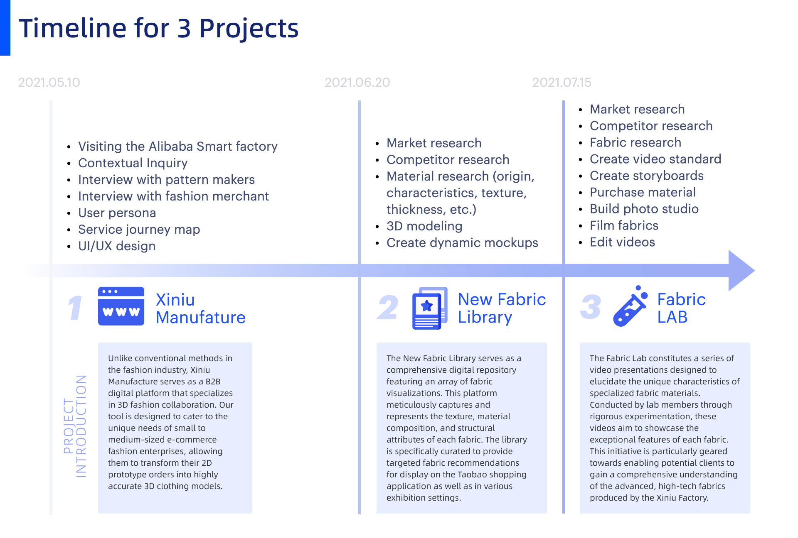
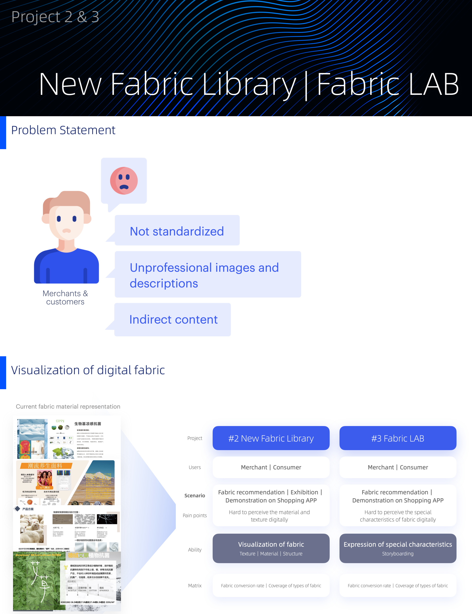
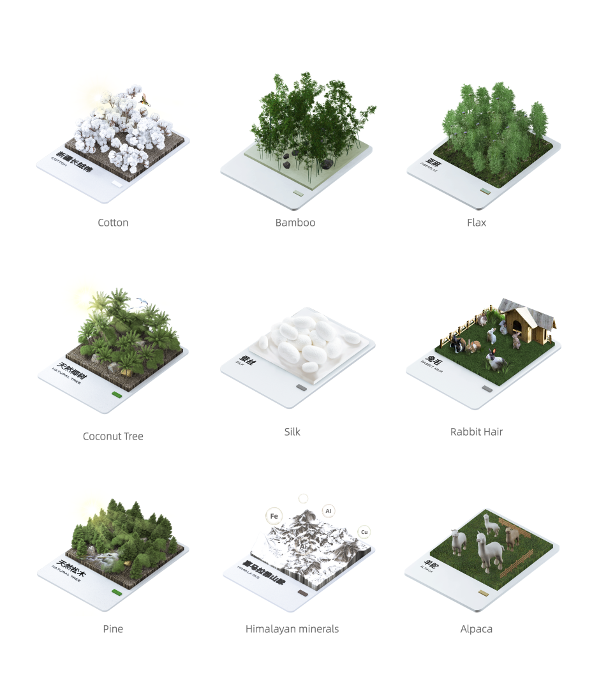
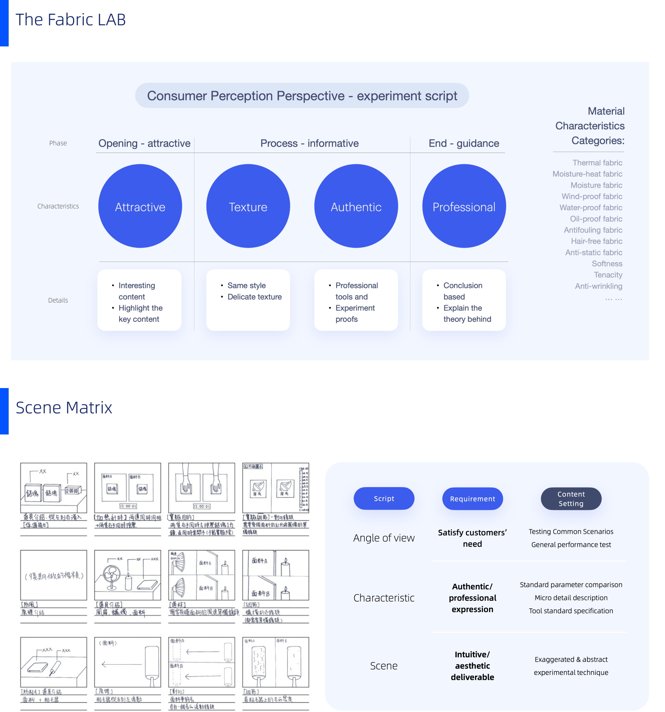

Alibaba Xiniu — Smart Manufacturing
A B2B cloud platform that pulled fashion manufacturing into the cloud — message-driven file sharing, 3D modeling, and shared workspaces between PMs and developers. Satisfaction 68% → 93%.
Overview
This is the second project I would like to introduce. It comes from my internship with the Taobao team — the Chinese Amazon at Alibaba — where I worked on Xiniu Manufacture, a series of digital fashion projects that includes a B2B online platform and a B2C 3D modeling and video experience.
In collaboration with a team of engineers and product managers, I invested a significant portion of my time shaping the fundamental structure of the fashion-production management platform for factories, the instant messaging section, and the 3D digital fabric depictions that showcase material textures. My role encompassed the full spectrum of the project — from initially identifying the problem, to finalizing the MVP design, formulating the feature roadmap, and coordinating closely with engineers on the final hand-off details.
Timeline & Project Introductions
Three projects ran back-to-back over the summer — each with its own audience, research method, and deliverable. Below is the timeline and a one-paragraph intro to each.

Project 1: Xiniu Manufacture
Xiniu (犀牛) Manufacture is Alibaba's B2B digital platform for fashion factories — a tool designed to cut the unique needs of small-to-medium-sized e-commerce fashion enterprises down to a few clicks, transforming traditional manufacturing communication and powering 3D clothing models. I led research with pattern makers and merchants, mapped the service journey, and designed the messaging-driven file sharing module that became the platform's core.

Project 2: New Fabric Library
Merchants and customers told us the same thing — current fabric representation on Taobao is not standardized, the photos look unprofessional, and the descriptions feel indirect. New Fabric Library is our answer: a comprehensive digital repository that meticulously captures and represents the texture, material composition, and structural attributes of each fabric.
Below are nine 3D fabric mockups — Cotton, Bamboo, Flax, Coconut Tree, Silk, Rabbit Hair, Pine, Himalayan minerals, and Alpaca — modeled in Cinema 4D and packaged into a shopping-app preview surface.


Project 3: Fabric LAB
The Fabric LAB constitutes a series of video presentations designed to elucidate the unique characteristics of specialized fabric materials. I led a video script standard built around the Consumer Perception experiment — Opening (attractive) → Process (informative) → End (guidance) — and a scene matrix that pairs script, characteristic, and scene so the team could film consistently across dozens of fabric types.
